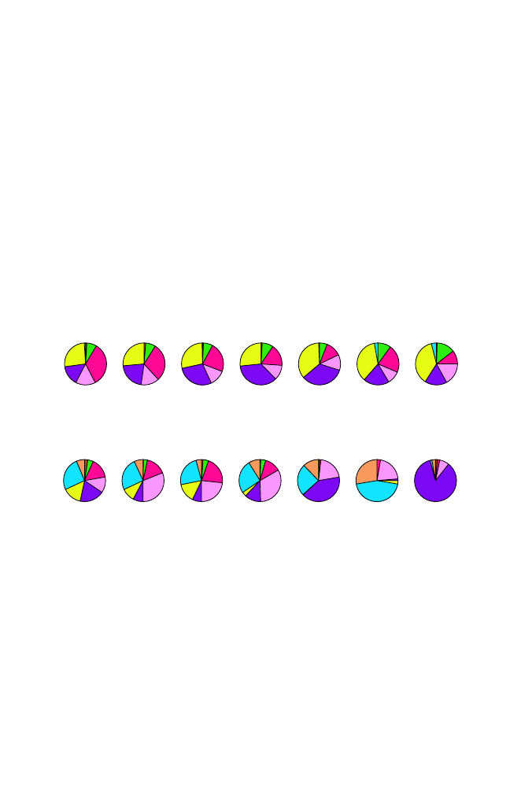

370
13 Genetic Variation in Populations
The data are taken from 52 populations in seven geographic regions of the
world measured for genotypes at 377 loci (Rosenberg et al., 2002). An exam-
ple of a region is sub-Saharan Africa, and examples of populations within this
region are Bantu, Mandenka, Yoruba, San, Mbuti Pygmy, and Biaka Pygmy.
The loci examined were
microsatellites
, which are tandem repeats of short
k
-words (see Section 13.4.2). Corresponding to each locus is a characteristic
number of different alleles. An example of the allele frequencies for two loci
measured for seven different geographical regions is shown in Fig. 13.1. For
the particular locus D12S2070, there are eight alleles. Clearly, the allele fre-
quencies differ for different regions. For example, one allele represents 85% of
the total in native American populations, but that same allele represents only
7% of the total in populations from the Middle East. Allele frequencies for
other loci may not vary much across regions, as illustrated by D6S474.
D12S2070
Africa
Europe
Middle
East
Central/
South Asia
East
Asia
Oceania
America
D6S474
Africa
Europe
Middle
East
Central/
South Asia
East
Asia
Oceania
America
Fig. 13.1.
[This figure also appears in the color insert.] Allele frequencies associated
with two microsatellite markers in human populations taken from seven different
regions. Each allele has a different color code, and the size of the sector in the pie
chart indicates allele frequency. Reproduced with permission. Copyright 2002 NA
Rosenberg.
13.3.1 Describing Variation Across Populations
We now introduce some statistics for describing population variation. Let
K
be the number of alleles for any given locus, and let
p
j
be the relative frequency
of allele
j
. The probability
F
that two randomly chosen genes at a locus are
identical is